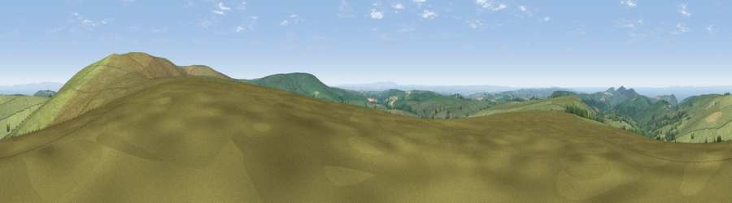

Viewpoint near Challacombe
#4048 in England · top 14% of its area beats it · near Challacombe · open accessWhere it is
The exact computed spot (SS 68500 42975). Click the marker for map links.
Public access: this spot lies on mapped open-access land (CRoW Act 2000) — you may roam here on foot. Computed from Natural England's CRoW access layer and OpenStreetMap rights of way — not the legal definitive map. Always verify locally.
The view, rendered

A 360° render of this exact spot computed from the terrain model, tree cover and land cover — summer colours, afternoon light, calibrated against photographs of famous viewpoints. Real trees, hedges and buildings will differ in detail.
The panorama
Grey silhouette: terrain skyline in each direction (720 bearings, Earth curvature and refraction included). Dashed green: skyline with trees (+15 m) and buildings (+8 m) as obstacles. Blue strip: how far the ground is visible on each bearing.
Where the view opens
Wedge length = distance to the farthest visible ground on that bearing (vegetation-aware). Rings at 10, 25 and 50 km.
What fills the view
86% grassland · 6% water · 5% woodland · 2% cropland
Angular shares of the visible panorama (visual magnitude), not map area. Landscape diversity 0.24 (0–1 Shannon).
Key numbers
More beautiful places nearby
The staircase of upgrades: each row has a higher view potential than everything closer. Driving times are estimates from straight-line distance, calibrated against real road routing — check an actual route before setting out.
| Place | Direction | Drive | Score |
|---|---|---|---|
| Viewpoint near Challacombe | ENE · 1 km | ~4 min | 77.1 |
| Viewpoint near Martinhoe | NNW · 6 km | ~12 min | 82.1 |
| Lynton Hill | NNE · 6 km | ~13 min | 82.7 |
| Viewpoint near Barbrook | NNE · 6 km | ~13 min | 83.1 |
| Viewpoint near Martinhoe | NNW · 6 km | ~13 min | 84.7 |
| Viewpoint near Martinhoe | NNW · 7 km | ~14 min | 85.9 |
| Viewpoint near Martinhoe | NNW · 7 km | ~14 min | 87.2 |
| Old Tennis Court | NNE · 7 km | ~15 min | 88.3 |
51.17085, -3.88234 · source: screening · position refined by local search. Computed location — check access rights before visiting.